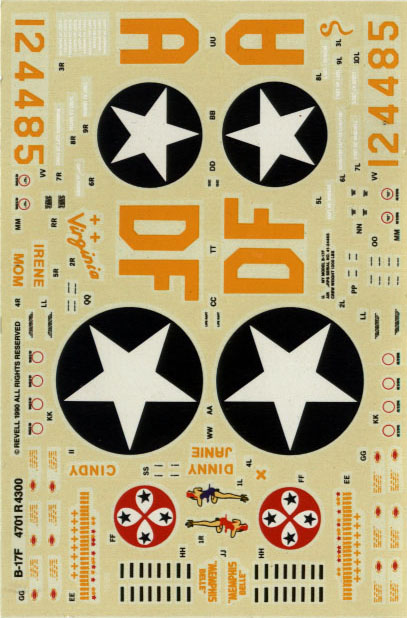

{kind=link}
{kind=link}
{kind=link}
{kind=link}


Revell 1/48 B-17F
Images and text Copyright © 2003 by Matt Swan
Developmental History
The venerable B-17 Flying Fortress is probably one of the most recognizable aircraft of World War 2. At least three primary versions with innumerable sub-versions saw action during the war. This aircraft along with the B-24 and the English, Canadians and other Allies operating Lancasters, Halifaxes, Wellingtons, Lincolns and Manchesters was responsible for the demolition of the Nazi infrastructure ultimately eliminating their ability to feed the war machine. Initially Boeing produced and shipped “E” model B-17s, which were the version present at Pearl Harbor during the Japanese attack. Although the “E” model was built exclusively by Boeing by 1942 the demand for this bomber was so great that production was subcontracted to the Vega division of Lockheed and the Douglas plant at Long Beach, California. These facilities never produced the “E” model but began production with the “F” model.
The B-17F was externally almost identical to the earlier B-17E. Externally, the F could be distinguished from the E only by the use of a single piece plastic blown transparent nose. Apart from the optically-flat bomb aiming panel, the nose transparency was frameless. However, there were over 400 internal changes, designed to make the bomber a more effective fighting machine. Improvements included a Sperry ball turret in the belly of the bomber, external bomb racks, wider paddle-bladed propellers, dual braking systems, additional machine gun mounts in the nose and newer Wright R-1820-97 Cyclone engines that offered war emergency power.
The first B-17F (41-24340) from Boeing flew on May 30, 1942 while the first Vega unit (42-5705) flew on May 4, 1942. Because of the many small changes constantly being introduced to the B-17F production line a block designation scheme had to be introduced to make it possible for field maintenance units to keep track of different varieties of B-17Fs that were in service. Each “block” was a group of fifty units with the first block being B-17F-1-VE (Vega) and the second block being –5 and –10 and so on to block 50 at which time the plant switched to the “G” model. Douglas block production ran from block-1-DL to block-85-DL for a total of 605 units at which time they too shifted to the “G” model. As far as Boeing block production was concerned, the first 50 were B-17F-1-BO, the second 50 were -5, and the third 50 were -10, but the numbers in each block varied from this point on. Boeing built a total of 2300 B-17Fs, the last production block being -130-BO. A total of 3405 B-17Fs were built--2300 by Boeing, 605 by Douglas, and 500 by Lockheed-Vega.
The B-17F went into action with the 8th Air Force in Europe, and was used for the first American bombing raid against the German homeland on January 27, 1943 in a raid on Wilhelmshaven. It was soon revealed that it was vulnerable to attack from the front by enemy fighters. Factory installed armor plate was not well positioned and the crew were relatively unprotected from frontal machine gun and cannon attack. Many field modifications were carried out in an attempt to correct this including additional machine guns firing from the nose cone or from windows cut into the sides of the fuselage. The Memphis Belle displayed some of these modifications with four machine guns mounted in the nose.
The maximum bombload of the first B-17Fs was 9600 pounds but on typical missions the load was 4000-5000 pounds over operating ranges of 1400 miles. Under certain conditions, eight 1600-pound bombs could be carried internally and two 4000-pound bombs externally, raising the total load to 20,800 pounds. However, with such a load the effective range was quite small and all maneuvers were severely restricted.
One B-17F (Serial number 42-3521) was transferred to the US Navy. It was given the Navy serial number of 34106, but was operated under its Army designation. It was later modified to B-17G standard and redesignated PB-1. B-17F 41-24613 was turned over to the National Advisory Committee for Aeronautics (NACA) for extensive performance testing under the designation XB-17F. Despite its designation, it was not a prototype.
Currently only three B-17Fs remain in existence today, these aircraft are B-17F-10-BO 41-24485 Memphis Belle which is under restoration, B-17F-50-DL 42-3374 which is in storage at Offutt AFB, Nebraska and B-17F-70-BO 42-29782 which is the only flying B-17F in existence and was used in the 1989 remake of “The Memphis Belle”.
The Kit
This is the original Revell release of the B-17F first seen in hobby shops in 1978 prior to the acquisition of Revell and Monogram by Odyssey Partners. That acquisition took place in 1986, fully ten years later and the companies operations were merged shortly after that. There has been speculation among hobbyists that the molds for this kit were originally mastered by Bill Koster for a Monogram kit that would originally have been a 2-in-1 kit allowing both an F and a G but was later dropped in favor of the G only and the master went to Revell who made the F. This is not true in any sense at all. Bill Koster had nothing to do with the masters and the kits were supposedly developed independently. It was interesting to note that the Revell air-frame parts fit with the Monogram kit. When this was discovered it is reported that Monogram warned Revell “not to let this happen again.”
Some people have criticized the Revell "F"s for their smooth interior but early B-17 F's had insulation in the nose compartment at least so this is actually fairly accurate. The kit features plenty of raised panel lines that have come under fire from model purists in the past however the real airplane was rife with overlapping panels and raised lines so once again this is fairly accurate. The landing gear bays lack any good detail but the tail wheel strut is very accurate.
The kit includes 108 pieces molded in olive drab plastic and in clear plastic. The level of flash is very low and the detail level, while raised and nearly 30 years old, is very good. The kit lacks interior detail and would benefit from some interior accessory kits or scratch building. Considering the size of the model when complete, length 19.25 inches and wingspan 25.75 inches, it is very likely that the finished product will end up hanging from a ceiling so serious interior work would be wasted in these cases.
Click on the images above for larger pictures.
It would probably be wise for the modeler to consider the display options availible prior to starting a kit of this size. The exterior dimensions of this kit are fairly accurate. The kit includes exterior bomb racks and a pair of thousand pounders to hang there. The clear parts all show good clarity and have survived the last eight years (my edition is the 1995 release) without taking any serious damage. The kit includes thirteen machine guns to allow for the Memphis Belle field modifications.
Click on the images above for larger pictures.

The decals for this kit allow for marking one aircraft, the Memphis Belle. The markings are given for the nose art to be in a red dress on the right and a blue dress on the left and give the modeler lots of stencils. Unfortunately my decals have not weathered the years well and have yellowed severely. Fortunately there are plenty of aftermarket decals out there at model shows and in auction houses, many are out-of-production and a few still in production. The instructions are done in the old manner of a large fold out and include painting color codes for the Memphis Belle as well as decal placement instructions.
Conclusions
There have been many re-issues of this kit over the intervening 25 years since it’s original release and it is sure to be on the hobby shelves again in the future. This kit will provide for a beautiful representation of an “F” model B-17 as an Out-Of-Box build and will also suffice as an excellent starting place for a super-detail project or an “E” type conversion. Over the years there have been many different conversion kits produced for this model, several of which are still readily available while others can be found on various model show tables or on E-bay. Decals have been produced for many, many different aircraft and there are a multitude of detail packages kicking around that will allow for various interior and exterior add-ons. You want to build a B-17? Build one of these; novice or expert you will not be disappointed.